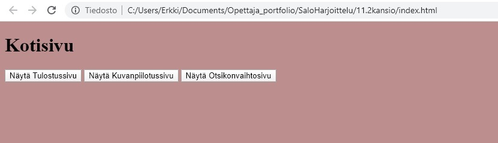
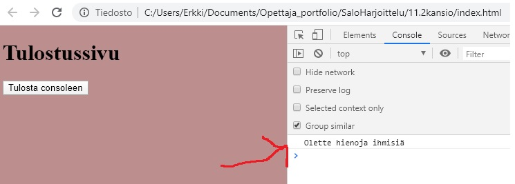
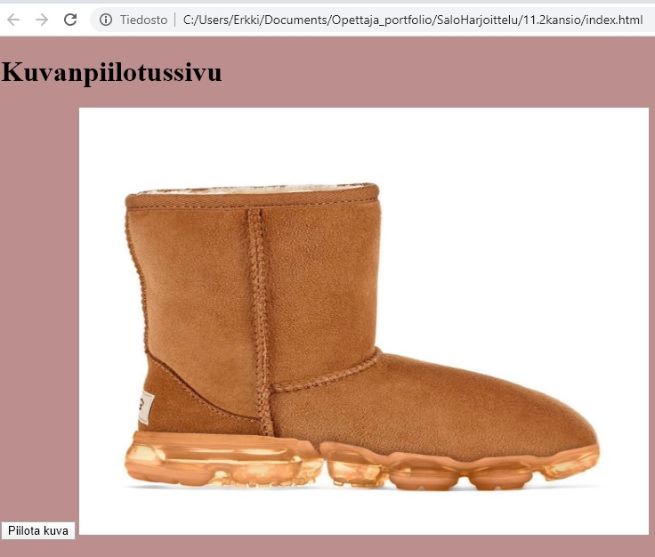
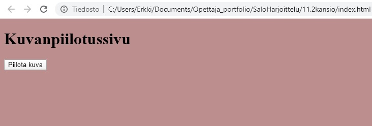
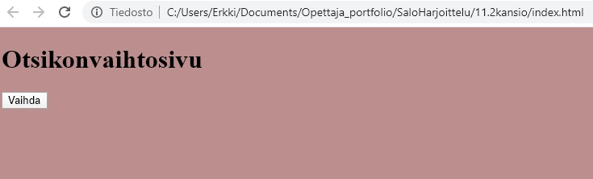
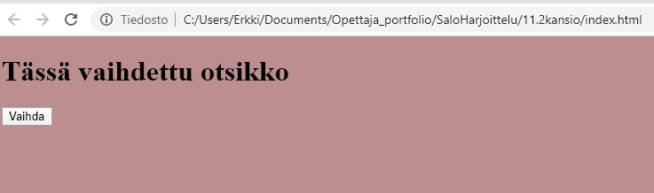

Heipä hei! Tässä tenttiohjeistus
Tentin tarkoituksena on luoda simppelihkö sivusto Visual Studio Codella ja julkaista se netissä GitHubin avulla
Tee siis työtä aloittaessasi tarvittavat toimenpiteet, jotta saat yhdistettyä työn GitHubiin.
Tehtävä: Luo sivusto jossa on kotisivun lisäksi kolme erillistä osiota/sivua nimiltään Tulostussivu, Kuvanpiilotussivu ja Otsikonvaihtosivu
Vihje 1. Käytä sivuja/osioita luodessasi divejä
Vihje 2. Pohdi ensin mitä elementtejä kullakin sivulla pitää olla ja nimeä ne (id) selkeästi, jotta pysyt paremmin kärryillä.
Vihje 3. Käytä sivujen/divien vaihtamiseen aiemmin opeteltuja page ja active-juttuja. Muista lisätä css-tiedostoon tarvittavat tiedot
Kotisivun pitäisi näyttää suurinpiirtein tältä (taustavärin saatte valita itse, kunhan se on jokin muu kuin valkoinen)

Tulostussivu: Kotisivulla oleva button "Näytä Tulostussivu" johtaa Tulostussivulle, jonka pitäisi näyttää tältä

Tulostussivulla on näppäin "Tulosta consoleen", jonka pitäisi tulostaa jokin viesti consoleen. Voitte itse valita mitä haluatte tulostaa.
Kuvanpiilotussivu: Kotisivulla oleva button "Näytä Kuvanpiilotussivu" johtaa Kuvanpiilotussivulle, jonka pitäisi näyttää allaolevalta.

Kuvanpiilotussivulla on näppäin "Piilota kuva", jonka pitäisi piilottaa kuva

Otsikonvaihtosivu: Kotisivulla oleva button "Näytä Otsikonvaihtosivu" johtaa Otsikonvaihtosivulle, jonka pitäisi näyttää tältä

Otsikonvaihtosivulla on näppäin "Vaihda", jonka pitäisi vaihtaa otsikko

Lopuksi:
Saatuasi työn valmiiksi tee terminaalissa push, julkaise työsi Githubissa ja lähetä linkki sivun osoitteesta Erkin sähköpostiin eksuvi@utu.fi
Bonustehtäviä
Ei pakollisia, mutta näistä saa halutessaan lisäpisteitä:
Keskitä sivujen näppäimet
Aseta eri taustaväri joka sivulle
Kun kuva on piilotettu, vaihda näppäimen tekstiksi "Piilotettu"
Kun otsikko on vaihdettu, vaihda näppäimen tekstiksi "Vaihdettu"
Laita jokaiselle sivulle näppäin jonka avulla voi palata etusivulle
Lisää Otsikonvaihtosivulle radio button ja ehto mikäli radio button ei ole valittu, otsikkoa ei vaihdeta (Vinkki Tietoa radio buttonista ja Radio buttonin check)